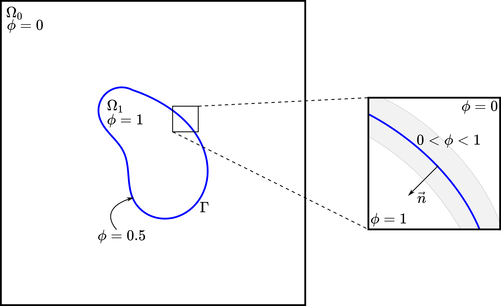

The Volume of Fluid (VOF) Method#
Numerous examples of flow encountered in engineering involve multiple fluids: sloshing of fuel in aircraft tanks, mixing of bread dough, and motion of droplets and bubbles to name a few. In these cases, the involved fluids can be immiscible, and we are interested in the evolution of the interfaces between those fluids.
Let \(\Omega = \Omega_0 \cup \Omega_1\) be the domain formed by two fluids, namely fluid \(0\) and \(1\), with \(\Gamma\) denoting their interface and \(\partial \Omega\), the remaining boundaries, as illustrated in the figure below. In the VOF method [1], we define the scalar function \(\phi\) as a phase indicator such that:
This phase indicator (or phase fraction) changes rapidly but smoothly from \(0\) to \(1\) at the interface such that \(\Gamma\) is located at the iso-contour \(\phi=0.5\), as illustrated below.
{kind=link}
The evolution of \(\Gamma\) (or the iso-contour \(\phi=0.5\)) in the time interval \([0,T]\) due to the action of velocity field \(\mathbf{u}\) on \(\Omega\) is described by the advection equation of the field \(\phi\):
or using Einstein notation:
Developing the second term gives:
Typically, the term \(\phi\partial_i u_i\) (or \(\phi \nabla \cdot \mathbf{u}\)) is zero due to mass conservation in the Navier-Stokes equations. However, previous work done in Lethe showed that while \(\nabla \cdot \mathbf{u}=0\) is globally respected, it is not locally respected, especially around the interface, so lets keep it for now.
To complete the strong formulation of the problem, let’s impose a no flux boundary condition on \(\partial \Omega\):
where \(n_i\) represent the outward pointing unit normal vector of \(\partial \Omega\), i.e., \(\mathbf{n}\).
Finite Element Formulation#
To obtain the finite element formulation, we first need the weak formulation. Therefore, let \(v\) be an arbitrary scalar function on \(\Omega\). To obtain the weak form, we multiply the strong problem by \(v\) and integrate over \(\Omega\):
To ensure that those integrals are well defined in \(\Omega\), we chose the appropriate solution spaces:
Thus, the weak problem is:
Find \(\phi \in \Phi(\Omega) \times [0,T]\) such that
Using Petrov-Galerkin method, the finite element formulation reads:
Find \(\phi^h \in \Phi^h \times [0,T]\) such that
where \(\Phi^h\) and \(V^h\) are finite element spaces, and \(\phi^h(\mathbf{x},t) = \sum_{j=1}^N \phi_j(t)\psi_j(\mathbf{x})\). In standard notation, this formulation corresponds to:
Find \(\phi^h \in \Phi^h \times [0,T]\) such that
Stabilization#
The numerical resolution of the advection equation requires stabilization because of its purely advective character, which makes the equation hyperbolic. Furthermore, a second stabilization term is added to improve the capturing of the interface due to sharp gradient across \(\Gamma\). Since SUPG only adds diffusion along the streamlines, crosswind oscillations may occur if no appropriate shock capturing scheme is used. To that end, a Discontinuity-Capturing Directional Dissipation (DCDD) shock capturing scheme is used [2]:
where the first element-wise summation represents the SUPG stabilization term and the second is the shock capturing scheme. The same SUPG stabilization as in the Navier-Stokes finite element formulation is used (see On the Need for Stabilization). The terms of the DCDD scheme are:
The term \(v_\mathrm{DCDD}\) ensures that diffusivity is added only where there is a large phase gradient and a non-zero velocity, i.e., where the interface \(\Gamma\) is in motion. The term \(\mathbf{f}_\mathrm{DCDD}\) adds diffusivity only in the crosswind direction, since streamline diffusion is already added by the SUPG stabilization.
To avoid a non-linear finite element formulation, the phase gradient of the previous time step \((\phi^h_\mathrm{old})\) is used.
Interface Diffusion and Regularization#
The VOF method tends to diffuse the interface, i.e., over time, the interface becomes blurry instead of a sharp definition, and the change from \(\phi = 0\) to \(1\) occurs on a larger distance.
Thus, we use regularization methods to keep the change in \(\phi\) sharp at the interface. Three methods are currently available: projection-based interface sharpening, algebraic interface reinitialization and interface filtration.
Projection-Based Interface Sharpening#
The current projection-based interface sharpening method consists of two steps:
Phase fraction limiter
The phase fraction limiter above will update the phase fraction if it failed to respect these bounds.
Interface sharpening using a projection
where \(c\) denotes the sharpening threshold, which defines a phase fraction threshold (generally \(0.5\)), and \(\alpha\) corresponds to the interface sharpness, which is a model parameter generally in the range of \((1,2]\). This projection-based interface sharpening method was proposed by Aliabadi and Tezduyar (2000) [3].
Geometric Interface Reinitialization#
The geometric interface reinitialization implemented in Lethe uses the signed distance \(d\) from the interface to regularize the phase fraction field. The method is based on the work of Ausas et al. (2011) [7], originaly proposed in a level-set framework. Once computed, the signed distance is transformed into a phase fraction field using a transformation function \(g\) such as \(\phi = g(d)\).
To compute the signed distance, the interface is linearly reconstructed from the iso-contour \(\phi=0.5\) using the Marching Cube algorithm implemented in deal.II. Then, the signed distance is computed layer-by-layer, from the interface until the user-defined maximum distance \(d_\mathrm{max}\) is reached on each side of the interface.
For the first layer, the analytical minimum distance between the DoFs of the cells cut by the interface and the reconstructed interface is computed. It comes down to the computation of the distance between points (i.e., the DoFs) and the line segments in 2D or triangles in 3D that approximate the interface.
For the subsequent layers, the signed distance for the remaining DoFs is computed iteratively in the narrow band defined by \(d \in [-d_\mathrm{max}, d_\mathrm{max}]\), by solving a minimization problem. We refer the reader to the work of Ausas et al. (2011) [7] for more details. The signed distance for the DoFs outside of the narrow band is set to \(\pm d_\mathrm{max}\), where the sign depends on the side of the interface on which they are located.
Finally, the signed distance field is transformed to a phase fraction field. Here, we want that:
In Lethe, two functions are available to achieve that: a hyperbolic tangent function or a 4th degree, piecewise polynomial.
hyperbolic tangent: the regularized phase fraction is given by
\[\phi = 0.5-0.5\tanh(d/\varepsilon)\]where \(\varepsilon\) is a measure of the interface thickness. Note that this transformation does not ensure that \(\phi=0\) or \(1\) when \(d = \pm d_\mathrm{max}\). The value of \(\phi\) at \(\pm d_\mathrm{max}\) depends on \(d_\mathrm{max}\) and \(\varepsilon\).
piece-wise polynomial: this transformation takes the form
\[\begin{split}\phi = \begin{cases} 0.5 - 0.5(4d' + 6d'^2 + 4d'^3 + d'^4) \text{ if } d' < 0.0 \\ 0.5 - 0.5(4d' - 6d'^2 + 4d'^3 - d'^4) \text{ if } d' > 0.0 \end{cases}\end{split}\]where \(d' = d/d_\mathrm{max}\) is the dimensionless distance. Contrary to the hyperbolic tangent function, it ensures that \(\phi=0\) or \(1\) when \(d = \pm d_\mathrm{max}\).
Algebraic Interface Reinitialization#
The algebraic interface reinitialization method consists of compressing and diffusing the interface in its normal direction. This is done by solving the following transient Partial Differential Equation (PDE) until steady-state is reached using a pseudo-time-stepping scheme as proposed by Olsson and coworkers (2007) [4]:
where:
\(\phi_\text{reinit}\) is the reinitialized phase fraction;
\(\tau\) is the pseudo-time independent variable. It is different from the time independent variable \(t\) of the actual simulation.
\(\mathbf{n} = \frac{\nabla \psi}{\lVert \nabla \psi \rVert}\) is the normal vector of the interface with \(\nabla \psi\) the projected VOF phase gradient, and;
\(\varepsilon = C \, h_\text{min}^d\) is the diffusion coefficient with \(h_\text{min}\) the smallest cell-size, \(C\) a constant factor multiplying \(h_\text{min}\), and \(d\) a constant power to which \(h_\text{min}\) is elevated. As default, \(C\) and \(d\) are set to \(1\).
Note
\(\nabla \psi\) is computed with the VOF phase fraction gradient field and remains constant through the interface reinitialization process of a same global time iteration.
Note
Here, we define the cell-size as being the diameter of:
a disk of equivalent area in 2D, and;
a sphere of equivalent volume in 3D.
The equation is solved using the finite element method:
Considering \(\upsilon \in V(\Omega)\) an arbitrary scalar function on \(\Omega\) as the test function and \(\phi_\text{reinit} \in \Phi(\Omega)\), the weak problem goes as follows:
Find \(\phi_\text{reinit} \in \Phi(\Omega) \times [0, \mathrm{\tau}_\text{end}]\)
As the equation is non-linear, we use the Newton-Raphson method and solve the linear system \(\mathcal{J} \, \delta\phi_\text{reinit} = -\mathcal{R}\). We obtain the Residual (\(\mathcal{R}\)) and Jacobian (\(\mathcal{J}\)) below:
where, \(\phi_\text{reinit}^{n}\) is the reinitialized phase fraction value of the previous Newton iteration.
Considering,
where \(\xi_j\) is the \(j\text{th}\) interpolation function of the reinitialized phase fraction field, the Jacobian reads:
and the reinitialized phase fraction is given by:
Interface Filtration#
In the interface filtration method, the following filter function is applied to the phase fraction \(\phi\) in order to get a better definition of the interface between the fluids:
where \(\phi'\) is the filtered phase fraction value, and \(\beta\) is a model parameter that enables sharper definition when increased. Recommended value is \(\beta=20\).
Surface Tension#
When two immiscible fluids are in contact, surface tension tends to deform their interface (also called the free surface) into a shape that ensures a minimal energy state. An example would be the force that drives a droplet into its spherical shape [5].
Resolution of the interface motion via the advection equation allows to compute the surface tension term and add its effect to the Navier-Stokes momentum equations.
As its name suggests, the surface tension \(\bf{f_{\sigma}}\) is a surface force. It is applied at the interface between two immiscible fluids and is given by:
where \(\sigma\) is the surface tension coefficient, \(\kappa\) is the curvature and \(\bf{n}\) is the unit normal vector of the free surface. Here, \({\bf{f_{\sigma}}}\) is a force per unit of area. To account for its effect in the Navier-Stokes equations, the surface force is transformed in a volumetric surface force \(\bf{F_{\sigma}}\) using the continuous surface force (CSF) model [5], that is:
where \(\delta\) is a Dirac delta measure with support on the interface. A good approximation for the term \({\bf{n}}\delta\) is \({\bf{n}}\delta = \nabla \phi\), where \(\phi\) is the phase fraction. Thus, the volumetric surface force is given by:
where the curvature \(\kappa\) is computed according to:
and the unit normal vector of the free surface, pointing from fluid 0 to 1, is obtained with:
When including the surface tension force in the resolution of the Navier-Stokes equations, the numerical computation of the curvature can give rise to parasitic flows near the interface between the two fluids. To avoid such spurious currents, the phase fraction gradient and curvature are filtered using projection steps [6], as presented in section Normal and Curvature Computations.
Normal and Curvature Computations#
The following equations are used to compute the filtered phase fraction gradient and filtered curvature. They correspond to the projection steps previously mentioned.
where \({\bf{v}}\) is a vector test function, \(\bf{\psi}\) is the filtered phase fraction gradient, \(\eta_n\) is the phase fraction gradient filter value, and \(\phi\) is the phase fraction.
where \(\kappa\) is the filtered curvature, and \(\eta_\kappa\) is the curvature filter value, and \(v\) is a test function.
The phase fraction gradient filter \(\eta_n\) and the curvature filter value \(\eta_\kappa\) are respectively computed according to:
where \(\alpha\) and \(\beta\) are user-defined factors, and \(h\) is the cell size. Recommended values are \(\alpha = 4.0\) and \(\beta = 1.0\).